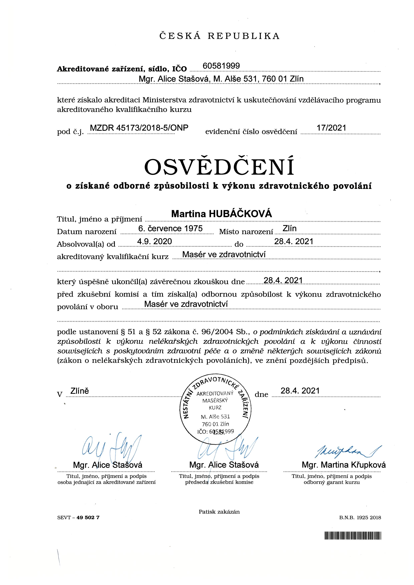
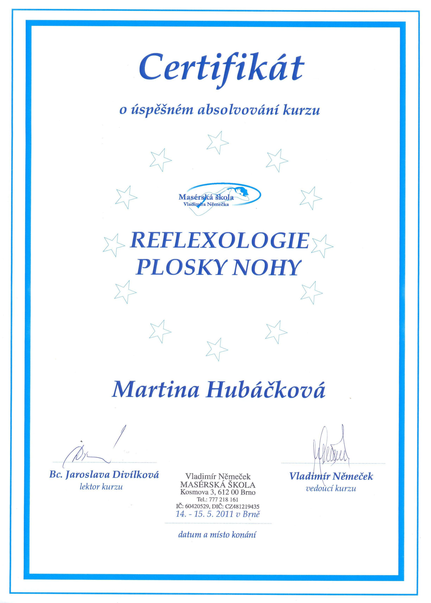
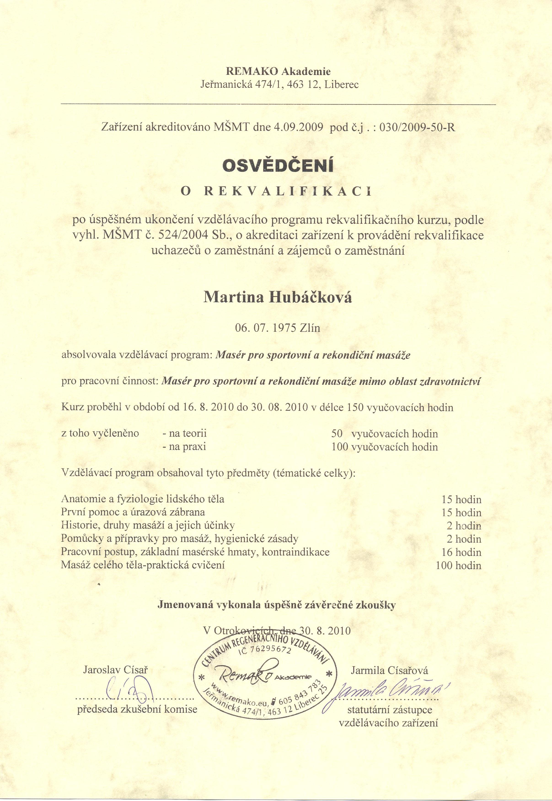
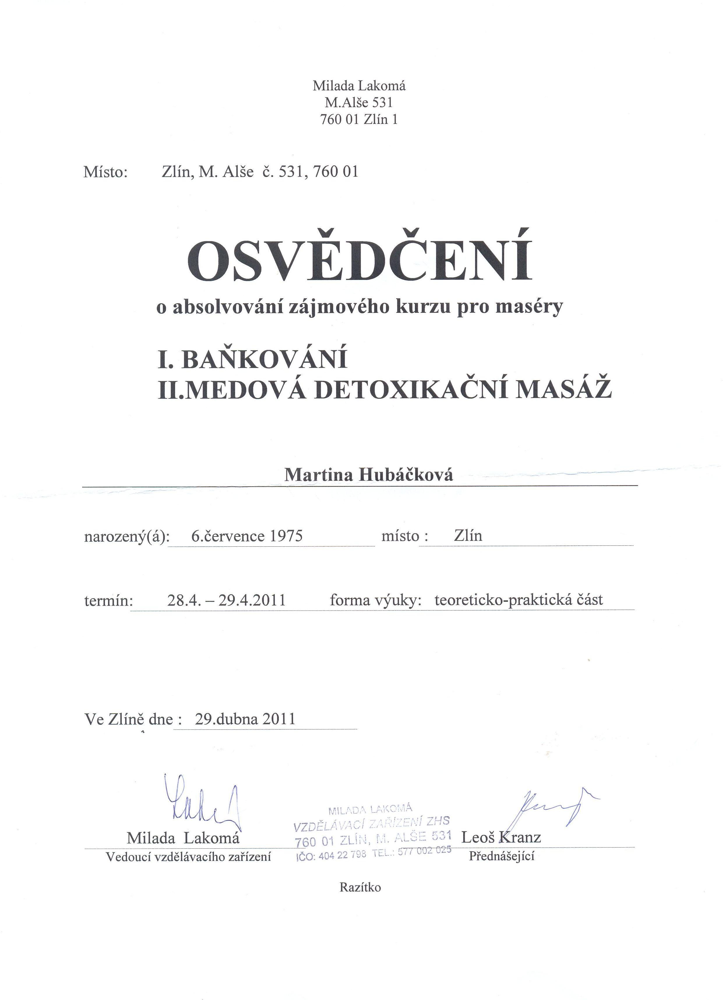
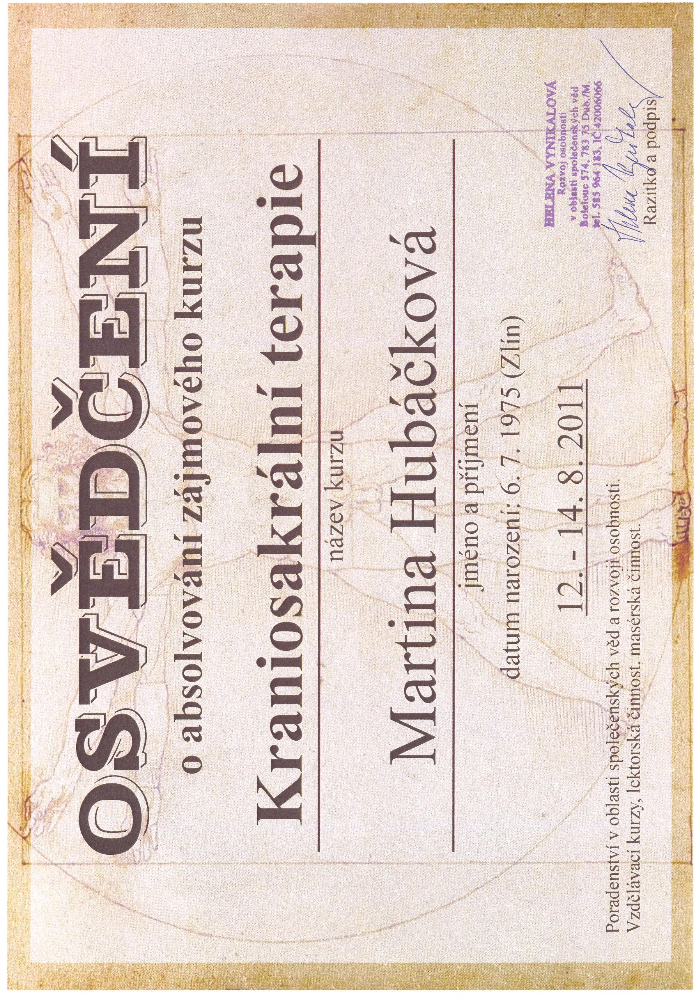
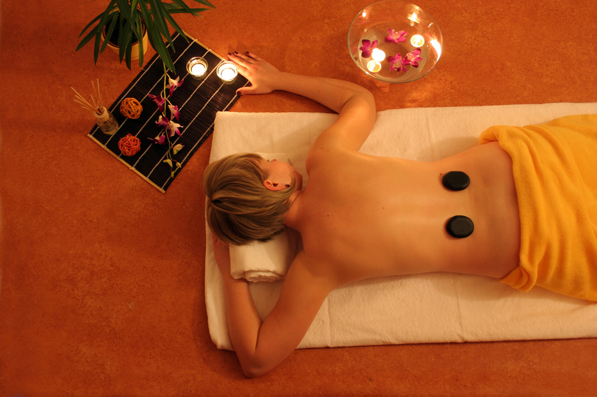
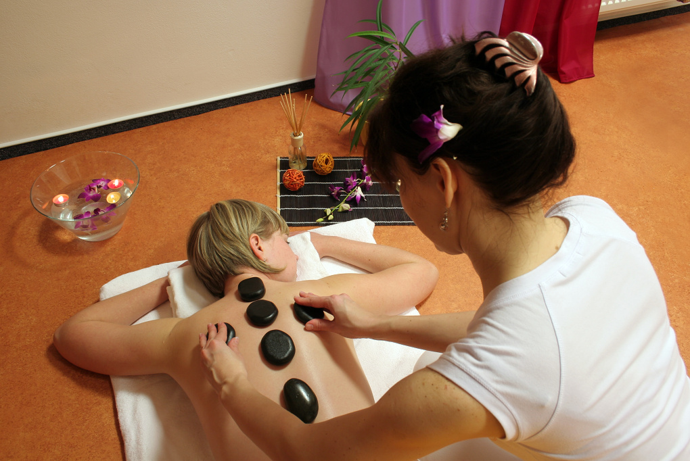
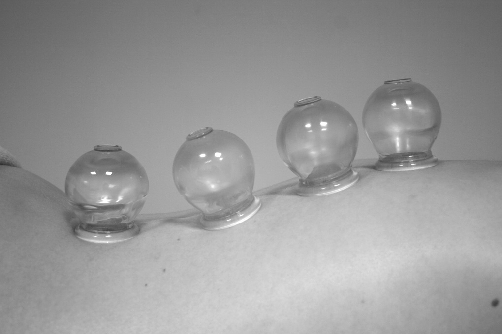

Těší mě!
Ráda bych se představila. Jmenuji se Martina. Stejně jako mnoho z vás si jistě prošlo nebo prochází určitými životními změnami, krizemi i já jsem hledala cestu pro své vlastní Uzdravení a Rovnováhu v Životě.
Pochopila jsem, že Život, jeho prožívání a štěstí je především v mém vnitřním nastavení Mysli a v přístupu k Životu. Musela jsem změnit mnoho vzorců, které jsou nám předávány/předkládány z rodiny a ze systémů a otevřel se mi postupně svět pro celoživotní studium spojené se zdravovědou – masážemi, etikoterapií a psychosomatikou (vliv emocí na zdraví).
Jsem velmi ráda za vás mé Klienty, kteří mě provázíte a jsme si oboustrannou pomocí.
Své dosavadní vzdělávací kurzy (baňkování, reflexologie plosky nohy, Dornova metoda) jsem doplnila o ucelený a podrobný kurz Masér ve Zdravotnictví.





Galerie




